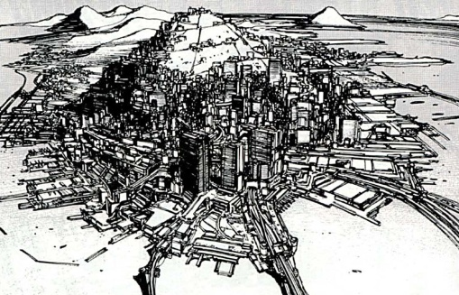
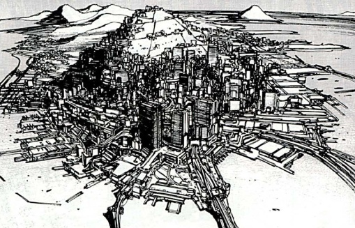
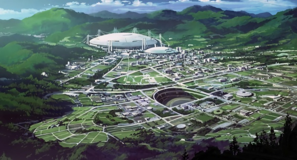
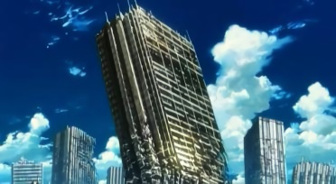

LIEUX IMPORTANTS DU JAPON
Akihabara : Connue dans le monde entier, d'Akihabara est la plus grosse ville au monde produisant du matériel électronique. Plus de 350 magasins de cybernétique, d'électronique et d'applications électroniques sont concentrés dans la zone autour de l'avenue Chuo-Dori, à l'est de la gare d'Akihabara. Ces dernières années, la tendance s'est éloignée des applications électroniques domotiques pour se concentrer sur le nouveau monde de la cybernétique. La plupart des habitants parlent l'anglais, le chinois et le coréen.
Avec ses nombreux centres de service, ses showrooms pour tous les principaux producteurs, ses magasins duty-free et ses nombreux évènements, la ville attire de nombreux touristes. Le festival Denki-Matsuri, qui a lieu en été et en hiver, est le plus grand événement organisé et une occasion en or de faire les boutiques.
Aeropolis I & II : La vieille cité dans le secteur ouest de Niihama est énorme. Cependant, alors que l'expansion de la ville se poursuit, cette zone devient de moins en moins attractive pour de nouvelles constructions. Au début, elle était saturée par les polluants industriels. Une large partie de la vieille ville de Nihama devait devenir une zone d'abris pour les réfugiés. Ces derniers ont cependant refusé de s'y installer et le projet a été abandonné. Même si les matières polluantes ont depuis longtemps été enlevées par des micromachines, personne n'a essayé de reconstruire et de la repeuplée. Cette zone, fort laide avec ses bâtiments vieux et décrépis, se trouve à côté d'un secteur de réfugiés.
Dans une vaine tentative de réinsuffler la vie dans la vieille ville et de favoriser le repeuplement et les opportunités d'investissement, Megatech a commencé un audacieux projet de construction d'un géofront dans le secteur ouest. Cette construction serait la jumelle de celle à l'est, Aeropolis. À l'instar de sa soeur, Aeropolis II sera composé d'une partie souterraine surmontée par une tour massive, un complexe haut de plus de 100 étages. Cependant, même si Aeropolis I s'est avérée être un succès, Aeropolis II fut un échec et sa construction a été interrompue. Officiellement, selon le comité de Megatech en charge de la construction, Aeropolis II est seulement retardée et les travaux finiront par reprendre... éventuellement. Beaucoup pense qu'il était idiot de construire la structure là puisqu'elle est 90 étages plus élevée que toute autre chose autour d'elle. Toutefois, la plupart des gens avaient oublié son existence jusqu'à ce que le Front de Libération des Humains organise un acte terroriste sur Aeropolis II en utilisant son réacteur nucléaire qui était complètement abandonné mais encore pleinement opérationnel.
Agence de Recherche sur l'Intelligence Artificielle : Située à Newport, l'ARIA est une agence qui enquête sur les rapports parlants de ghosts se formant spontanément dans ce qui était une IA sans ghost et mène des expériences destinées à en créer. Jusqu'à maintenant, ils n'ont jamais trouvé une piste sérieuse. Actuellement, la seule chose capable de "créer" un ghost est un être humain. Cependant, la nouvelle puce neuronale de Kenbishi installée dans les Tachikomas, après avoir été soumise à de très importants stimuli et après que l'une des puces ait été endommagée par l'utilisation d'huile naturelle, a permis à un des cobayes de développer les éléments de base d'un ghost.
Bertarve : Bertarve est localisée à la pointe la plus au sud de l'île de Etorofu. Etorofu, tout comme Kunashiri, Shikotan et le groupe des îles Habomai a été occupé par la Russie depuis 1945 jusqu'à la fin de la 3ième Guerre Mondiale. A cette époque, Bertarve était une cité russe et l'emplacement d'une base soviétique de sous-marins. Quand la Russie s'est retirée et a rendu les îles du Nord au Japon, les forces armées russes ont placé des charges explosives et ont dynamité la base. Depuis cette époque, Bertarve a quand même vu sa population augmenter. Beaucoup de Russes vivent encore à proximité mais de nombreux Japonais sont revenus. Le soutien des corporations dans ce secteur est important à cause de sa localisation stratégique au nord et la plupart des entreprises les plus importantes ont des filiales dans la ville. Son problème principal est le crime. Avec peu de temps entre l'échange des forces de police et le fonctionnement du nouveau système, le taux de criminalité à Bertarve a augmenté de façon très importante. La ville est devenue un refuge pour les criminels recherchés, les gangs et les espions qui visent des cibles russes. Un marché noir florissant s'est mis en place et grâce à la corruption régnant au sein des forces locales de police, il s'est installé au vu et au su de tous comme n'importe quelle rue marchante. Si c'est illégal et que vous en avez besoin, vous êtes certain de le trouver là.
La géographie de Bertarve est particulièrement intéressante. La ville est bâtie autour du Mont Bertarve, qui culmine à environ 4500 mètres. Les gratte-ciels bouchent la plupart des vues sur la montagne. Certains des plus grands bâtiments font près de deux kilomètres de haut. Depuis son centre, la ville s'étend sur onze kilomètres dans toutes les directions. D'importants ports de pêche sont situés tout autour de la ville, ce qui en fait un des ports principal du Japon. Etorofu est reliée aux autres îles et au reste du Japon par le train à sustentation magnétique Tohoku. En ce qui concerne la répartition sociale, les riches vivent au sommet des tours, bien au dessus des pauvres qui errent dans les rues. Avec des passerelles aériennes reliant la plupart des tours, les riches n'ont jamais besoin de descendre.
Comme Newport City, Bertarve est très dense et conduire une voiture dans ces conditions relèvent de la haute voltige. La plupart des rues sont remplies de gens, qui pour la plupart d'entre eux préfèrent se déplacer à pied. Un train à sustentation magnétique ainsi qu'une méga-autoroute traversent la ville et relient Etorofu aux autres îles. Bertrave est la clé de la route vers Etorufu.
 

Agence de Renseignement du Cabinet (CintAg) : Une organisation formée récemment qui, sous les ordres du Secrétaire en chef du Cabinet, a pour mission principale la collecte puis l'analyse des renseignements en provenance de l'étranger et de temps en temps la manipulation de l'opinion publique. L'Agence a été créée après la guerre quand les services de renseignement existant avant cette époque et l'ancien Bureau de la Politique de Défense ont fusionné.
L'Ile de Rêve : Quel nom décevant. Yume-no-Shima, l'Ile de Rêve (le dépotoir de la métropole de Tokyo) s'est étendue après la 3ième Guerre pour occuper une surface quatre fois plus importante qu'initialement prévu. Une importante usine de recyclage se trouve toujours là au milieu des dunes de déchets.
Route d'Etorufu : Tous les ports ont pris des mesures de sécurité pour empêcher la contrebande, l'exportation hors du Japon de technologies interdites ou l'entrée sur le territoire de terroristes et d'armes. Il y a cependant une faille dans la sécurité : la route des îles du Nord. Elle est devenue la Route d'Etorufu, un lieu de passage pour la contrebande qui relie le Japon à l'est de la Russie. Tout ce qui est illégal au Japon ne doit son existence qu'à cette brèche dans la sécurité. La majorité de la contrebande est contrôlé par Bertrave et les meilleures estimations indiquent que l'argent tirée de cette activité se mesure en millions.
Cité Harima de Recherche Universitaire : Initialement un simple complexe de recherche financé par l'Etat et les grandes sociétés nationales, Harima s'est transformé en une vraie ville avec la croissance des laboratoires de recherche et des établissements d'enseignement. En 2028, les puces neuronales mises au point en 1998 à Harima sont utilisées dans de nombreuses IA et robots.
La ville est également le berceau de Spring-8, la plus grande installation au monde de rayonnement synchrotron de troisième génération. Elle fournit le plus grand rayonnement disponible actuellement. L'Institut Japonais pour la Recherche sur l'Energie Atomique (JAERI) et le RIKEN (Institut de Recherche en Physique et Chimie) ont commencé la construction de Spring-8 en 1991, et avec le soutien de la préfecture de Hyogo, des universités, des instituts de recherche et de l'industrie, ont terminé la construction et ont inauguré l'installation en octobre 1997. Depuis son achèvement; la gestion, l'exploitation, la mise à jour de l'installation, le service aux utilisateurs et la recherche scientifique et technologie sur le rayonnement synchrotron ont été effectuées par l'Institut Japonais de Recherche sur le Rayonnement Synchrotron (JASRI), désigné par la loi comme le seul institut autorisé à gérer, exploiter et développer le Spring-8. Dans les installations du Spring-8, de nombreux chercheurs du monde entier travaillent à lever le mystère sur les secrets de la nature en utilisant le rayonnement synchrotron.
La Cité Harima "Jardin de la Science" est une partie importante du plan technologique Nishi-Harima. Celui-ci a permis à la préfecture de Hyogo de devenir la référence au Japon dans les domaines de la science et la technologie. Megatech et Kenbishi Heavy Industries utilisent tous deux la ville comme banc d'essai pour leurs prototypes.

Kyushi : Kyushi est maintenant la capitale du Japon.
Newport : Newport est une île artificielle, créée à partir du quartier Shinhama de la préfecture de Tokushima. La ville de Newport est devenue un point clé pour le commerce, les relations internationales et tout ce qui concerne les affaires avec les étrangers. La ville fut construite au début du millénaire quand des problèmes de place commençaient à apparaître un peu partout. Il n'y avait pas de métropole urbaine dans la zone de Tokushima avant que le port n'ouvre dans les années 1990. La zone prospéra et le nombre de ses habitants s'accrut de manière exponentielle. Au début des années 2000, le travail sur la mégalopole flottante qui allait devenir la ville de Newport commença. La ville est devenue une des nouvelles mégalopoles les plus dynamiques du nouveau millénaire. Même si Néo Tokyo et Osaka sont encore des villes importantes au Japon, Newport est devenue la ville internationale du Japon. Toutes les corporations internationales majeures y ont leur siège et de nombreuses conférences politiques ont lieu à Newport plutôt qu'à Néo Tokyo. En ce qui concerne la ville en elle-même, elle est presque construite sur le modèle d'une forteresse. Les tours corporatistes les plus grandes se dressent fièrement au milieu de la partie flottante, avec des milliers de bâtiments plus petits tout autour. Une voie d'eau intérieure entoure la zone du milieu. Cette voie d'eau se divise en de plus petits canaux qui débouchent dans d'autres parties de la ville. Le deuxième anneau est constitué par les larges jetées (qui sont équipées pour manutentionner les plus grands cargos) et les entrepôts. Le reste de Shinhama, qui se trouve à terre, est connue comme étant la "Vieille Ville". Les zones septentrionales de Tokushima sont plus clairsemées et c'est là qu'il est possible de trouver les grandes propriétés et le style architectural traditionnel comme les pagodes.
De nombreuses mega-autoroutes conduisent à la partie flottante; malheureusement, une fois sur l'île, conduire devient un calvaire. Newport est à la fois très dense et très densément peuplée, et donc la meilleure façon de se déplacer est d'utiliser le système de train aérien, les bus électriques ou le bateau (sous réserve bien sûr de se rendre près du canal).

Néo Hanamaki : Un autre centre urbain construit après la 3ième Guerre Mondiale. Une ville régionale qui se trouve sur la ligne de chemin de fer de Tohoku, ligne qui va vers Bertarve. La région comprend une agriculture et une industrie prospères. La gare pour le monorail, le seul moyen de transport vers la Région Autonome de Tohoku est situé au coeur de la zone industrielle.
Néo Tokyo / Vieux Tokyo : Reconstruite après la destruction d'une grande partie de la vieille ville par une explosion nucléaire, Néo Tokyo est située près de son ancêtre et s'étend à un tel point qu'elle est sur le point de l'absorber. Quand cela se produira, le Vieux Tokyo sera peut-être prêt à être à nouveau habité. Des machines travaillent nuit et jour pour détruire et remodeler le paysage, essayant de faire en sorte que le site soit à nouveau au dessus du niveau de la mer. Heureusement, les radiations ont été enlevées grâce au Miracle Japonais. A ce jour, le Vieux Tokyo reste un témoignage "vivant" d'une période où le monde fut au bord de l'autodestruction. Actuellement, les parties au sec du Vieux Tokyo sont le domaine de millions de sans-abri et de ceux qui veulent rester en dehors du système. Le Vieux Tokyo est connu pour avoir un marché noir très actif et très rentable pour les armes et la cybernétique.


Niihama : Située dans la préfecture de Niihama, la ville de Niihama a connu une croissance très importante. La Section 9 utilise cette ville comme base. On peut aussi y trouver la bien connue Université de Niihama, l'Ecole de Médecine de Niihama et celle de Soins Dentaires où le Département de Nano-Production est installé.
Iles Ostrov : Le Japon revendique la propriété de plusieurs îles situées au nord de Hokkaidô. Parmi celles-ci, on trouve les deux îles les plus au sud des îles Kouriles, Ostrov Iturup (Etorofu-Jima), Ostrov Kunashir (Kunashiri-jima) ainsi que Shikotan et l'archipel des Habomai. L'URSS occupa ces îles en 1945 après la défaite du Japon au cours de la Deuxième Guerre Mondiale. Depuis la dissolution de l'URSS en 1991, la Russie a administré ces îles réclamées par les Japonais. Après la Troisième Guerre Mondiale, le Japon a pris le contrôle de ces îles sans plainte aucune. Les Russes vivants sur place furent autorisés à rester en tant qu'immigrés et la plupart d'entre eux ont accepté leur nouvelle situation, comme sur Ostrov Iturup, la plus peuplée des îles. Des heurts continuent néanmoins à avoir lieu entre les différents groupes ethniques qui peuplent les îles Ostrov. Plusieurs bases militaires russes abandonnées sont toujours là, inoccupées. Au moins deux bases navales ont été abandonnées et même une base souterraine de sous-marins. Plusieurs corporations comme Sagawa ont déménagé leurs installations sur Iturup, occupant d'anciennes bases militaires. Un géofront est aussi en construction. A cause de l'importante population étrangère et la position politique complexe de ces îles, de nombreux marchés noirs existent, notamment sur Iturup.

Secteurs d'Aide aux Réfugiés : Après les 3ièmes et 4ièmes Guerres Mondiales, des mouvements massifs de population eurent lieu à travers le monde. Des centaines de milliers de non-japonais se retrouvèrent sur le territoire japonais soit à cause d'invasions ratées soit en fuyant leur pays d'origine. Beaucoup (ceux avec des compétences ou des diplômes recherchés ou avec des corps cybernétiques avancés) obtinrent un visa et d'autres la citoyenneté japonaise, ce qui entraîna un changement dans la composition ethnique de la société japonaise. Cependant, plusieurs centaines de milliers de personnes n'obtinrent ni l'un ni l'autre. La loi spéciale sur le traitement des réfugiés fut votée et de nombreux lieux (pour la plupart des no-man lands et d'anciennes zones irradiées qui avaient été nettoyées après le miracle japonais) furent sélectionnées et clôturés. Les réfugiés furent autorisés à vivre de façon indépendante au sein de ces secteurs. Cependant, l'accès au Japon sans visas ou permis leur était interdit. A de nombreux égards, ces secteurs sont devenus des nations autonomes, sans chef et sans aucun moyen de subvenir à leurs besoins. Personne au sein de ces secteurs ne souhaitant retourner dans son pays d'origine (à supposer qu'il existe), la situation perdure depuis des années.
Il y a actuellement au Japon cinq secteurs résidentiels d'aide aux réfugiés composés principalement de Chinois. L'un est localisé à Niihama et le plus grand sur l'île de Kyushu est connu sous le nom de Camp ou d'Ile Dejima. Un autre se trouve dans la région du Kanto et un quatrième dans le secteur de Shinjuku (une partie du Vieux Tokyo se trouve dans ce camp). Enfin le dernier se trouve à Nagasaki. Des sans-abris, sans aucun autre endroit où aller, se réfugient parfois dans ces secteurs. Ils offrent souvent une main d'oeuvre bon marché aux villes principales comme Kyushu. L'Ile de Dejima se différentie des autres secteurs. Contrairement à ceux qui réutilisent des installations déjà existantes, elle se dresse sur une île industrielle flottante, construite spécialement pour accueillir des réfugiés et reliée à la terre par un long pont. Ce pont demeure le seul passage et la seule voie de communication entre l'île et le reste du Japon.

Région Autonome de Tohoka : La Région Autonome de Tohoka (RAT) est une partie du Japon qui est généralement peu connue et qui est donc devenue en quelque sorte indépendante depuis la dernière guerre. Elle utilise un camouflage qui la protège à la fois des reconnaissances aériennes et spatiales. Cette région est connue comme étant un refuge pour les scientifiques travaillant sur plusieurs technologies avancées, notamment les micromachines. Le Japon continue à considérer la RAT comme faisant partie intégrante de son territoire et quand les scientifiques de la RAT firent une percée technologique qui (avec les brevets adéquats) pouvait générer des rentrées importantes d'argent, le Japon déroba le brevet et vola la RAT. Cette technologie était le riz MM, qui fut la solution à la plupart des problèmes de nourriture à travers le monde.
Protégée des imageries spatiales et aérienne par un camouflage optique, tout ce qui apparaît est un barrage géant avec un réservoir important. En réalité, il s'agit d'une installation spéciale du JGSDA construite afin de préserver la propriété intellectuelle du Japon. Maintenant que la guerre est terminée, les travaux ont repris pour lui rendre sa forme originelle de barrage.
1987 : la construction de la structure du barrage commence.
1995 : la construction est terminée.
1996 : conversion en "Mur extérieur du périmètre défensif de Tohoku" sans que la structure du barrage soit testée.
1996 : la construction du barrage Rikuu commence en tant que périmètre défensif final de Tohoku puisque le barrage doit être le mur extérieur de l'installation du JGSDA.
2000 : les premières constructions en tant que périmètre défensif final de Tohoku sont achevées.
2002 : conversion en installation du JGSDA destinée à servir de centre d'évacuation des scientifiques. Des chercheurs et ingénieurs de premier plan de toutes les disciplines et de toutes les corporations et institutions japonaises y travaillent. Les recherches dans le domaine militaire et sur les problèmes d'augmentation de la production de nourriture commencent.
2026 : suite à la fin de la guerre, la décision de fermer le centre est prise. Sauf pour certaines personnes clefs, l'évacuation commence.
2028 : les opérations de démantèlement commencent. Des réfugiés "augmentés" sont utilisés comme main d'oeuvre. Même si l'installation se trouve dans les régions montagneuses de Néo Hanamaki, la zone est déclarée zone interdite pour tout le personnel non autorisé sous prétexte de problèmes d'eau potable.
Type : barrage gravitaire en béton
Hauteur du remblai : 156 mètres
Largeur du remblai : environ 400 mètres
Volume du remblai : environ 2 millions de mètres cubes.
Capacité maximale de stockage : 193 millions de mètres cubes.
Capacité optimale de stockage : 183 millions de mètres cubes.
Dénomination officielle : Barrage de Rikuu n°1.
Représentant un investissement de 400 milliards de yens, il s'agit d'un barrage multifonctions (lutte contre les inondations, protection du milieu naturel, irrigation et production d'hydroélectricité).
Un écosystème fermé a été créé artificiellement dans le secteur souterrain le plus profond de la RAT afin de pouvoir mener des expériences sur le riz MM. Ces expériences devaient permettre d'augmenter le rendement du riz et ce, dans toute une variété de conditions naturelles et climatiques, mais le projet fut arrêté suite à la mort de son chef Kei Yazawa.
Proposition de Périmètre défensif final de Tohoku
En prévision de la bataille qui sera livrée sur notre territoire et en tenant compte des demandes répétées pour une forteresse qui pourrait servir de pivot autour duquel manoeuvrer dans les régions non protégées du Nord, nous, par la présente, réaffectons l'installation qui est en construction dans le cadre de la politique de sauvegarde des données scientifiques et techniques de la "Ville Scientifique et Technique de Tohoku" au "Périmètre Défensif Final de Tohoku". Le commandant en chef des installations sera sous les ordres du Premier Ministre et du Ministère de la Défense. Cette réaffectation semble normale puisqu'à l'origine et à la demande de l'Etat, cette installation devait travailler à la sauvegarde des données scientifiques et techniques mais selon les derniers rapports, le nombre de personnes présentes sur place, en tenant compte des scientifiques et techniciens évacués de force pour travailler sur le développement de nouvelles armes de guerre, ainsi que leurs familles, se monte à plus de 9000. Le périmètre des installations est entouré de forêts montagneuses et utilise le remblai du barrage comme mur extérieur. De plus le seul mode de transport vers la ville la plus proche, la ville industrielle de Hanamaku, est un simple monorail géré par le JGSDA. Ceci n'est pas une zone d'évacuation, mais plutôt une assignation à résidence par l'Etat.
Après la guerre, les scientifiques libérés ont gardé le silence et ont toujours évité toute discussion à propos du Périmètre Défensif Final de Tohoku. Peut-être parce que même maintenant, 6 ans après la guerre, ce sujet leur rappelle la vie amère qu'ils ont vécue gardés enchaînés par la crainte des militaires.
Discours inaugural du Directeur de la Région Autonome
Nous tenons ces vérités pour évidentes, que tous les hommes sont créés égaux, qu'ils sont doués de certains droits inaliénables et que parmi ceux-ci, on trouve la vie, la liberté et la poursuite du bonheur. Afin de garantir ces droits, des gouvernements sont institués parmi les hommes, et ne tiennent leur juste pouvoir que du consentement des gouvernés. Qu'à chaque fois que toute forme de gouvernement s'oppose à ces droits, le peuple a le droit de modifier ou d'abolir ce gouvernement. Il est de leur droit de citoyens de rejeter un tel gouvernement, et de se donner de nouveaux gardiens pour leur sécurité future. Les fondations du nouveau gouvernement doivent reposer sur ce type de principes et organiser ses pouvoirs de telle façon semble être la meilleure façon de garantir leur sécurité et leur bonheur. En faisant cela, nous n'avons pas non plus voulu l'attention de nos frères japonais. Nous les avons mis en garde de manière répétée contre les tentatives faites par leur gouvernement d'étendre sur nous leur juridiction non désirée. Nous en avons appelé à leur magnanimité et à leur sens de la justice, et nous leur avons rappelé nos liens de parenté en les exhortant à condamner ces usurpations qui, inévitablement interrompront nos bonnes relations.
Encore une fois, les citoyens du Japon n'ont pas entendu ces appels fondés sur la justice et les liens de parenté. Par conséquent, nous, les représentants de la Région Autonome de Tohoku, assemblés en Congrès Général, en appelons au Juge Suprême en ce monde pour témoigner de l'honnêteté de nos intentions, et au nom et par l'autorité qui nous est conférée par le bon peuple de la Région Autonome de Tohoku, publions solennellement et déclarons qu'en tant que région autonome libre et indépendante, la Région Autonome de Tohoku devrait être de plein droit une zone économique libre et indépendante. En tant que Région Autonome de Tohoku, nous déclarons notre indépendance et nous absolvons dorénavant de toute forme d'allégeance au gouvernement japonais. Et à l'appui de cette déclaration, et avec une croyance forte en la protection de la Divine Providence, nous jurons de préserver nos vies, nos fortunes et notre honneur sacré.
-- Toshimi Tagami, Directrice de la Région Autonome de Tohoku.
Charte de la Région Autonome
Nos coeurs remplis de fierté et de notion de devoir, en tant que citoyens de la Région Autonome de Tohoku grâce à l'utilisation des connaissances amassées par nos ancêtres et à l'essence même des technologies difficilement acquises, nous déclarons que notre objectif est d'oeuvrer pour la paix en ce monde.
Nous développerons des corps et des coeurs sains, des connaissances importantes.
Nous construirons des villes où la paix des coeurs pourra être trouvée.
Nous utiliserons nos connaissances et nos technologies les plus impressionnantes afin de rétablir la paix dans le monde.